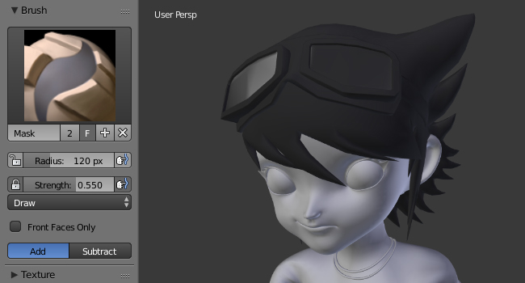

隐藏 & 遮罩¶
参考
模式: 雕刻模式
菜单:
隔开部分的网格进行雕刻有时是有用的。
隐藏¶
在“雕刻模式”中可以隐藏一部分网格，以提高性能并访问因为它们被其他部分遮挡而难以访问的部分网格。
隐藏的面不能雕刻。隐藏在编辑模式和雕刻模式之间共享（即，在一种模式下隐藏/取消隐藏也会影响其他模式)
- 隐藏框选
H - 选择网格并隐藏，其操作原理类似于 框选 工具。
- 显示框选
Shift-H - 显示选择框内的网格的隐藏部分。
- Show All 显示所有
Alt-H - 显示所有隐藏的部分。
- Hide Masked 隐藏遮罩
- ToDo.
遮罩¶
遮罩用于控制网格的哪些区域受到雕刻的影响。要编辑遮罩，请从笔刷面板中选择 遮罩画笔 。
可以在整个模型中编辑遮罩：
- 反转遮罩
Ctrl-I - Fill Mask 填充遮罩
- Clear Mask 清除遮罩
Alt-M

黑色部分（头发）被遮罩。
The .blend file
from OHA Studio © Mechanimotion Entertainment.